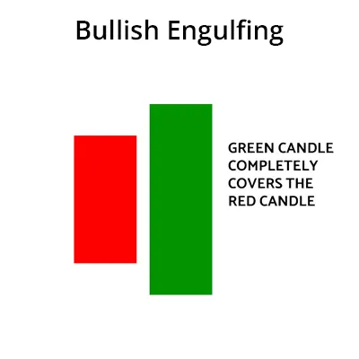
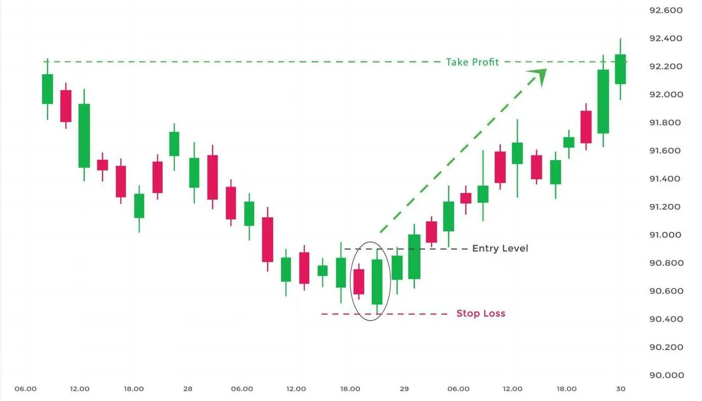

Das Bullish Engulfing-Muster ist ein Handelsmuster, das das Fehlen eines Abwärtstrends im Aktienmarkt
und die Anzeichen eines Aufwärtstrends anzeigt. Dieses Muster wird von zwei Kerzenhaltern gebildet.
Der erste Kerzenhalter ist ein langer, abwärts gerichteter Kerzenhalter, und der zweite Kerzenhalter
ist ein kleiner, aufwärts gerichteter Kerzenhalter, der den ersten Kerzenhalter vollständig umschließt.
Das bullische Engulfing-Muster ist ein starkes Anzeichen für einen Aufwärtstrend. Die Beobachtung dieses
Musters deutet darauf hin, dass am Aktienmarkt möglicherweise mit einer aufwärts gerichteten Perspektive
gehandelt werden sollte.
